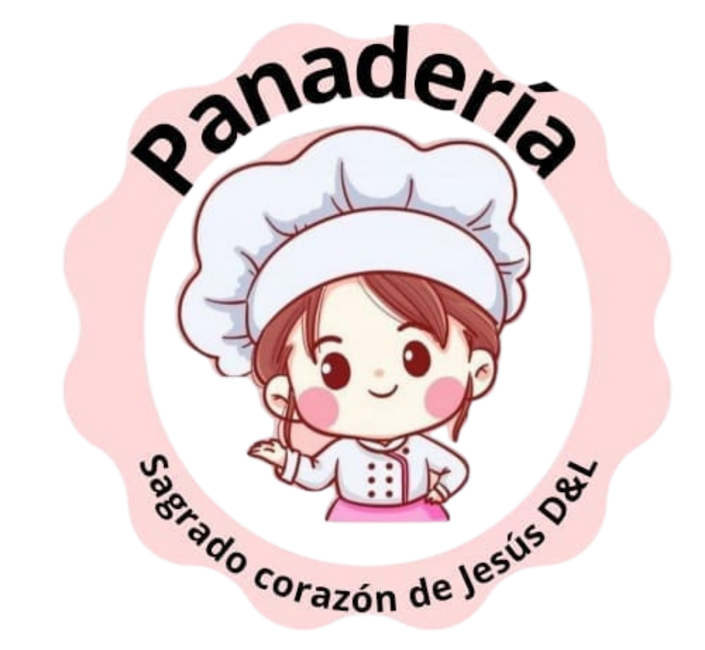
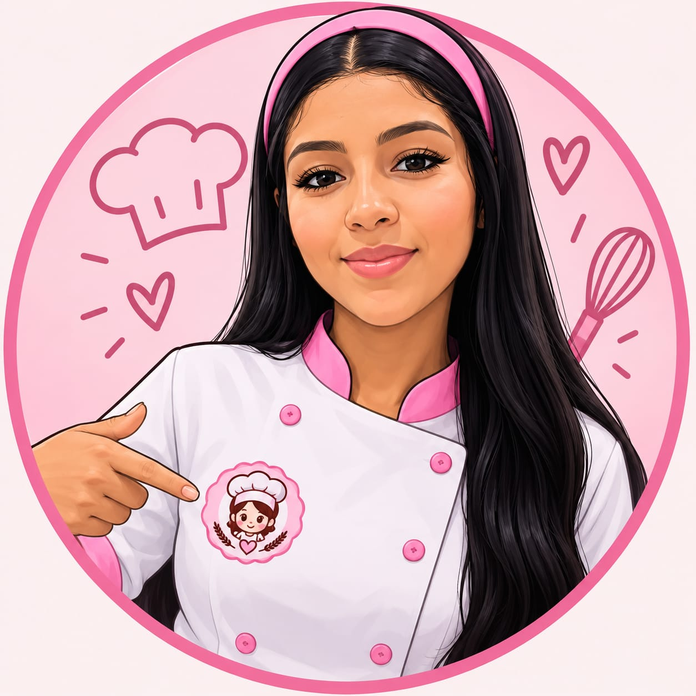
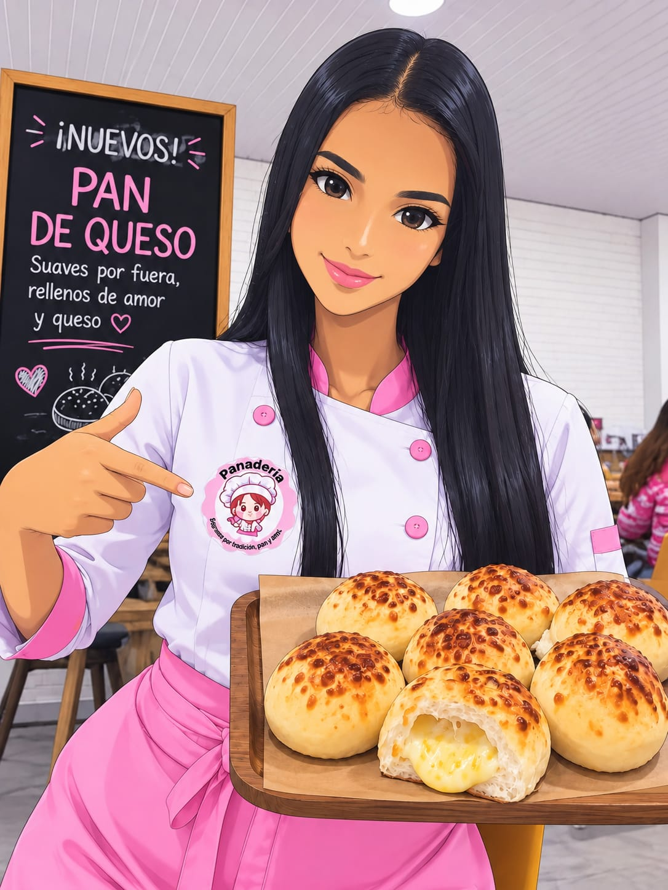
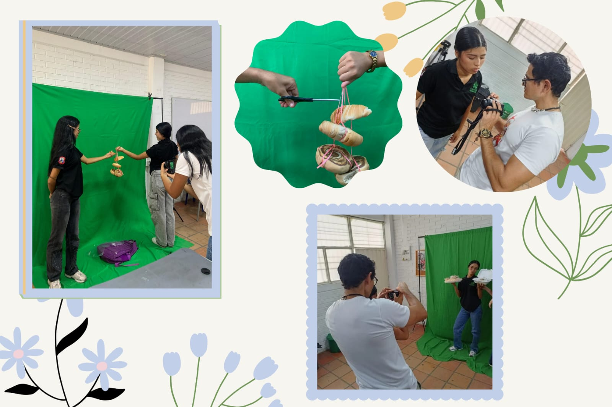
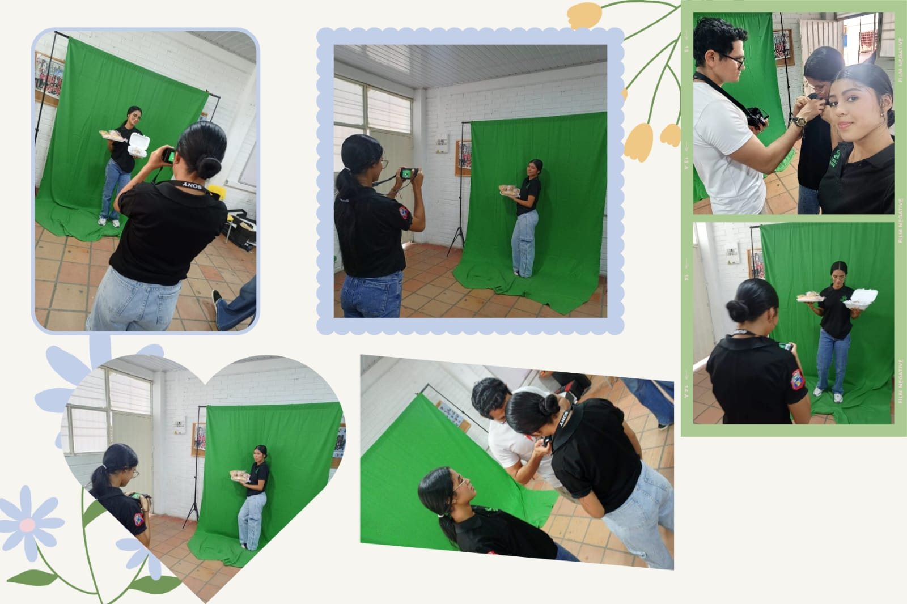
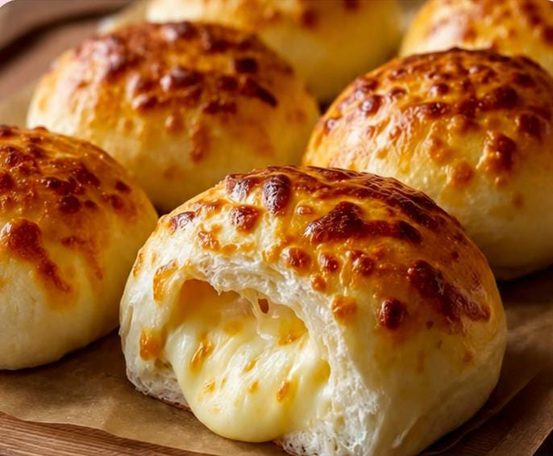
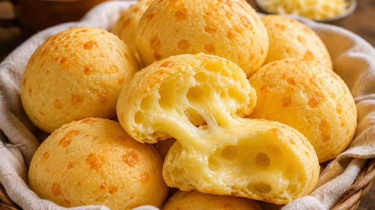
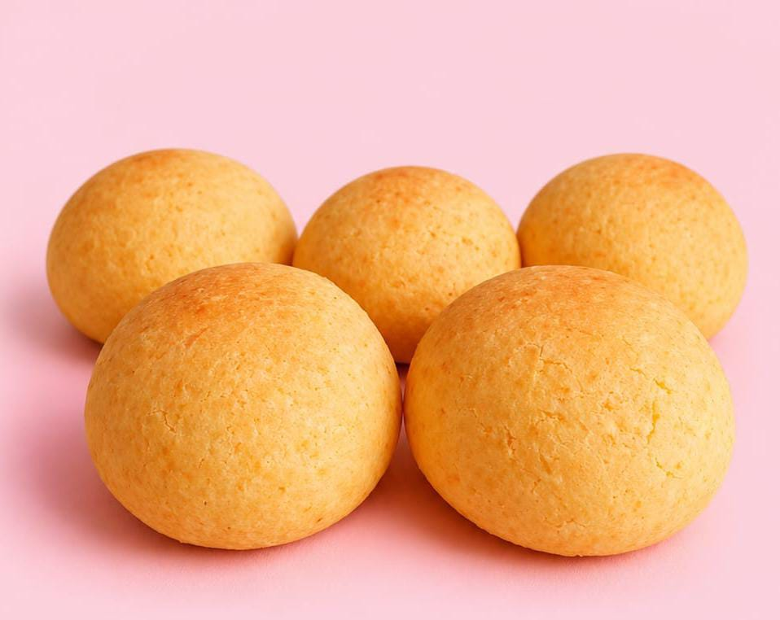
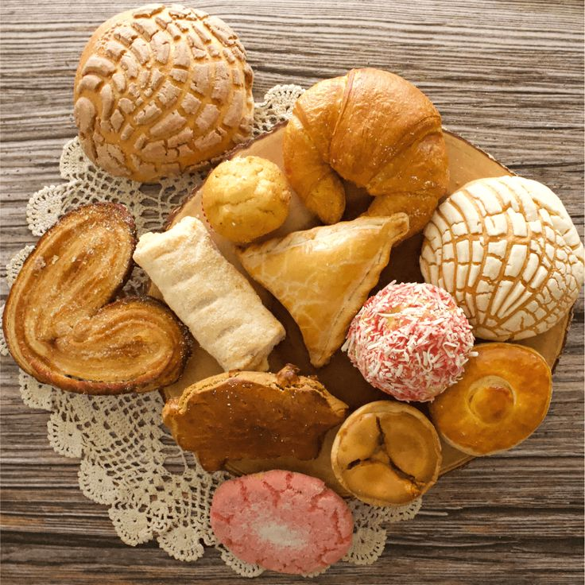
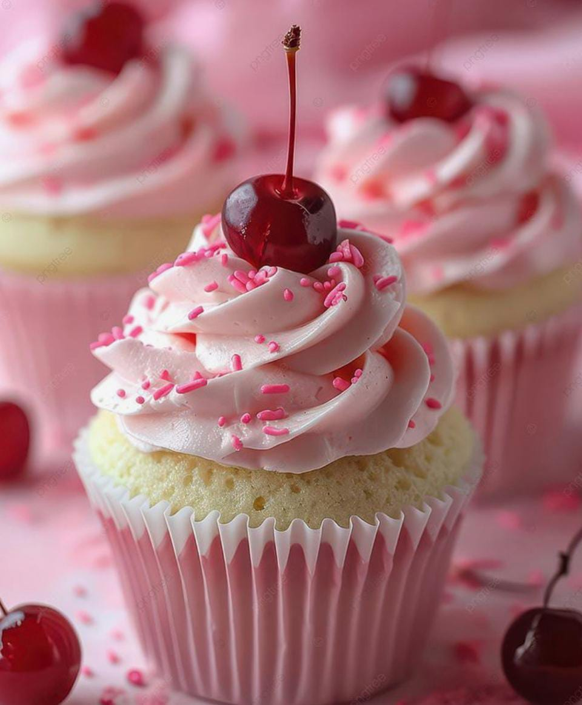

de Jesús D&L ✨
Manejo de Redes Sociales de una Panificadora
Técnica en Integración de Contenidos Digitales
Institución Educativa La Divina Pastora · Cúcuta


Somos dos estudiantes de grado décimo de la Institución Educativa La Divina Pastora y detectamos que una panadería del sector necesita fortalecer su presencia en redes sociales. Su alcance actual es limitado: muchos clientes potenciales no conocen sus productos, lo que reduce sus oportunidades de crecimiento.
Nuestra propuesta es gestionar las redes sociales de la panadería como proyecto de la técnica en Contenidos Digitales: publicaciones llamativas con fotografías, videos y diseños que resalten la calidad de sus productos, junto con estrategias sencillas de interacción para atraer más clientes.
Gestionaremos las redes sociales de la panadería creando contenido digital atractivo: fotografías de alta calidad, videos cortos del proceso de elaboración y diseños creativos. Sumaremos estrategias de interacción —encuestas, historias y promociones— para acercarnos al público.
Lo que hará la diferencia: contenido original que cuenta la historia de la panadería, mostrando tradición y frescura. Así, la marca no solo venderá pan — venderá experiencias que la distinguen.

Objetivos específicos
Mayor visibilidad en redes sociales, atracción de nuevos clientes y fortalecimiento del vínculo con los actuales. Impulsa el aprendizaje práctico de las estudiantes, promueve el trabajo en equipo y la creatividad, y conecta el negocio con la comunidad de forma cercana y moderna.
El proyecto no solo busca publicar contenido, sino crear una identidad digital auténtica para la panadería. A través de fotos, videos e historias transmitimos tradición, frescura y calidad, generando confianza y fidelidad en los clientes.
Gestionar de manera creativa y estratégica las redes sociales de la panificadora, ofreciendo contenido atractivo que conecte con los clientes, fortalezca la marca y aumente las ventas.
Ser una panificadora reconocida en el entorno digital por su cercanía con los clientes, innovación en contenidos y crecimiento constante en su comunidad en redes sociales.

Usaremos equipos básicos —celulares y computadores— para crear y editar contenido, junto con herramientas digitales para diseñar, editar y publicar.
Portal interactivo para la panadería, con el menú de productos del día, la ubicación geográfica y una sección de combos.
Videos tipo food styling (pan recién horneado) y posters promocionales para redes sociales.
Logo circular en tonos rosados con la palabra "Panadería" en la parte superior. En el centro, una panadera de estilo tierno con gorro de chef y expresión amigable. En la parte inferior se lee "Sagrado Corazón de Jesús D&L" — una imagen cálida, dulce y acogedora para la marca.
Barrio La Divina Pastora, Avenida 36 #31-69 — sector residencial cercano a la panadería.
Amas de casa, trabajadores, estudiantes y público en general de todas las edades.
Productos artesanales, frescos y con identidad propia — la clave para destacar frente a la competencia.





Panadería Sagrado Corazón de Jesús D&L — pan artesanal hecho con amor.
Proyecto de la Técnica en Integración de Contenidos Digitales · IEDP, Cúcuta.